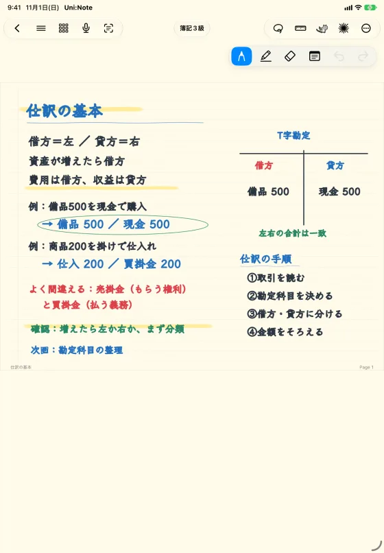
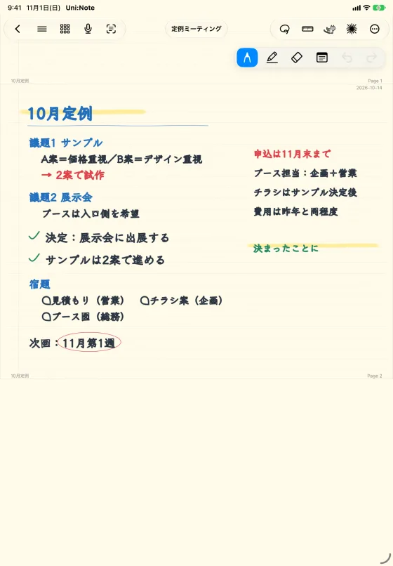
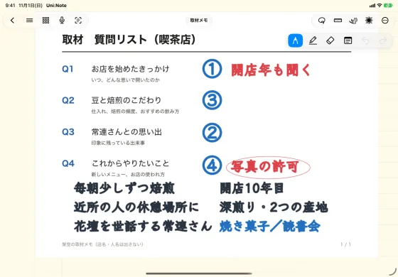

どんな使い方にも、設定で合わせられます。
授業・ゼミ・試験に。
経済学部2年。iPadとApple Pencilで授業を受け、週1回のゼミで発表がある。
資格の勉強、打ち合わせ、取材に。

会社員3年目。仕事のあとと通勤時間で、簿記3級の合格をめざしている。

企画職。週1回の定例と、社外との打ち合わせが多い。

フリーランスのライター。お店や人物への取材記事を書いている。
自分好みにする方法 →
まずは、無料で。じっくり確かめてから。
授業から試験まで、ひとつのアプリで。
Uni:Noteは無料で始められます。